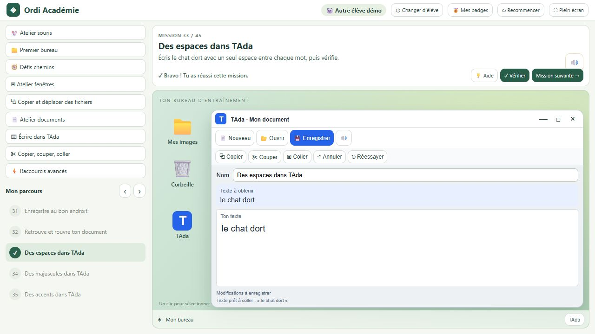

Les applications PAON
 Ordi Academie
Ordi Academie
Un ordinateur simulé et 59 missions pour apprendre les gestes de base de l’informatique, à son rythme.
Aperçu de l’application


Apprendre en pratiquant
Les missions abordent la souris, les fichiers et dossiers, les chemins, les fenêtres, le copier/couper/coller, l’écriture dans des documents TAda virtuels, le clavier et les raccourcis.
Dix badges accompagnent les progrès. Chaque élève dispose d’un profil avec son bureau et ses brouillons, sauvegardés sur le poste.
Les consignes peuvent être lues à voix haute avec les voix locales de Windows ou la voix française embarquée sous Linux. Le mode plein écran facilite l’utilisation en classe.
Tout se passe dans un ordinateur simulé : les exercices ne modifient aucun fichier réel du PC. Les profils restent locaux, sans mot de passe ni synchronisation serveur.
Téléchargements
Pour Windows 10 ou 11, en 64 bits. L’installeur est en français et inclut WebView2 : l’installation et les exercices fonctionnent sans connexion Internet.
Pour Linux Mint 22.3 Xfce, en 64 bits (amd64). Le paquet .deb embarque les composants nécessaires et la voix française : l’installation et l’utilisation fonctionnent hors ligne. Ouvrez le paquet avec l’installateur de logiciels, puis retrouvez Ordi Academie dans le menu Éducation.
Versions Windows et Linux disponibles ci-dessous.
Ordi Academie · Windows 0.3.0 et Linux 0.3.1
-
Télécharger
 Windows · installateur · 208,7 Mio Ordi-Academie-0.3.0-windows-x64-setup.exe
Windows · installateur · 208,7 Mio Ordi-Academie-0.3.0-windows-x64-setup.exe -
Télécharger
 Linux · paquet Debian / Ubuntu · 260,4 Mio Ordi-Academie-0.3.1-linux-amd64.deb
Linux · paquet Debian / Ubuntu · 260,4 Mio Ordi-Academie-0.3.1-linux-amd64.deb
Versions précédentes
Cette première version n’est pas signée : Windows peut afficher un avertissement à son lancement.
Guide d’installation Windows →
Nouveautés de la version 0.3
- Dix présentations animées pour découvrir les badges, avec voix française et sous-titres. Elles peuvent être revues, mises en pause et parcourues étape par étape.
- Un bouton « Montre-moi » accompagne la première création de dossier du badge Organisateur.
- La sélection multiple avec Ctrl+clic, Maj+clic, un rectangle ou Ctrl+A permet de copier, couper, déplacer, supprimer et restaurer des groupes de fichiers.
- Quatre nouvelles missions : deux dans l’Atelier souris et deux dans Organisateur.
Un parcours à son rythme
- Des consignes, une validation et des messages de réussite plus lisibles.
- Une progression visible vers chacun des dix badges, avec un écran de félicitations animé et un résumé des compétences acquises.
- Toutes les missions peuvent être refaites sans perdre les acquis du profil.
- Quatre nouveaux exercices pour entrer dans les sous-dossiers et revenir à la racine du bureau.
- Six nouveaux défis pour déplacer et redimensionner les fenêtres, utiliser les demi-écrans et travailler avec deux fenêtres côte à côte.
- Un glisser-déposer amélioré et la suppression des profils par clic droit, avec confirmations.
Les profils et badges de la version 0.1 sont conservés. Le bureau est adapté aux écrans 1280 × 720.
Correctif Linux 0.3.1
Les menus du clic droit « Nouveau dossier » et « Renommer » restent visibles et utilisables dans le navigateur de fichiers. Installez le nouveau paquet .deb, puis relancez l’application : vos profils et badges sont conservés.